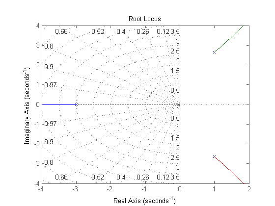

sobre
- Autor: Jonas Vieira de Souza
- Data: 30/09/2018
- Objetivo: Avaliar estabilidade de sistemas
Contents
configurações iniciais
limpar figuras, variáveis e console
close all;
clear;
clc;
verificar estabilidade e polos
- fecha a malha entre G1(s) e G2(s)
- localiza os polos no plano s
s = tf('s'); G1 = 1/(s^3 + s^2 + 2*s + 23); % G1(s) G2 = 1; % G2(s) sys = feedback(G1,G2); % FTMF rlocus(sys.num, sys.den); % Lugar das raízes axis([-4 2 -4 4]); grid on;